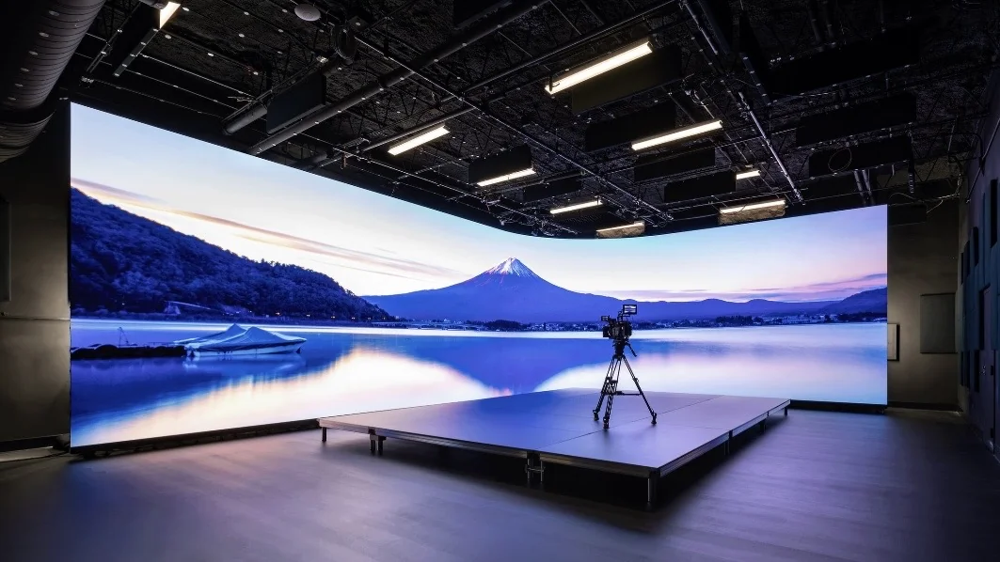

What does HDR, HLG and PQ specification mean for a broadcast or XR LED wall? It means writing the electro-optical transfer function, the luminance you will actually measure, and the colour space of the content into the purchase specification, so the wall, the processor and the camera or grade sit on the same curve. HDR is not a logo on a cabinet, and it is not the same thing as a published brightness in cd/m². The buying decision is whether the bidder has to deliver a named transfer function (typically HLG or PQ), a measurable luminance and black level, and a colour pipeline you can verify — or only a wall that “supports HDR” in a brochure.
This guide is for broadcast engineers, virtual-production supervisors and integrators writing a wall for a studio, a volume or a camera-facing event. It covers transfer functions and how to put luminance and colour into the spec. Camera flicker, shutter and scan issues belong in the camera flicker guide. Multi-camera frame remapping belongs in the frame remapping article. The wider volume and studio packages are in the XR LED wall specification and the broadcast studio buying guide. This page does not rewrite those topics.
On an LED wall, “HDR” is useful only when three things are named: the transfer function that maps signal to light, the luminance range the wall is expected to reproduce under a stated measurement condition, and the colour space the content is mastered in. If any one of those is missing, two vendors can both claim HDR and still deliver pictures that do not match the grade or the camera’s expectation.
The two transfer functions most often written into broadcast and XR specifications are HLG (hybrid log-gamma) and PQ (perceptual quantizer). HLG is typically used as a scene-referred, relative curve in live and broadcast plants that already work in a relative, display-light workflow. PQ is typically used as a display-referred, absolute curve in graded theatrical, OTT and finishing work, where a given code value is intended to correspond to a stated luminance. Both are defined in the relevant ITU and related practice documents; this article does not restate those curves and does not invent peak-luminance or code-value tables. The specification should name the function, the version or practice the project follows, and whether the wall is expected to display the signal natively or via a conversion in the processor.
A wall can be physically capable of a wide luminance range and still be the wrong choice if the processor, the input and the colour management cannot be set to the house curve. Conversely, a well-managed HLG or PQ pipeline on a correctly measured wall is more valuable than a peak-nit claim that was never measured in the same condition the cameras will see.
Asia Vision product pages publish brightness as a cabinet luminance in cd/m². They do not publish an HDR peak, a PQ peak, a MaxCLL or MaxFALL figure, an HLG nominal or a documented HDR certification. Do not treat a published brightness as any of those values. If a bid needs a peak or a measured highlight, ask for it on the quotation, with the transfer function, the patch size, the meter and the measurement condition stated, and keep it separate from the catalogue brightness row.
The series most often considered for these rooms are the following. E-PRO is a high-end rental platform specified for XR and virtual production, concerts and similar events, with SMD P1.953 / P2.6 / P3.91 and COB P2.6 / P3.91 / P4.81, a 250 × 250 mm module, 500 × 500 / 500 × 1000 mm cabinets, a plastic backshell indoors and die-cast aluminium outdoors. The product page says the series is purpose-designed for XR film and video production, and that high refresh and colour accuracy matter in that use; it also notes that a virtual-production wall puts a premium on refresh and camera compatibility rather than on peak brightness, because the wall is lit by the stage rather than by the sun. It does not publish a brightness number in the short specification table, and it does not publish an HDR, HLG or PQ rating.
COB Z is a rental COB series (P1.95 / P2.6, optional virtual P0.97 / P1.3, flip chip, 250 × 250 mm module, 500 × 500 mm cabinet with ±5° arc and right-angle splicing, no backshell, refresh ≥7680 Hz, brightness 1200 cd/m², DC 4.2 V, max current 6 A). The 1200 cd/m² figure is the published cabinet luminance. It is not an HDR peak or a PQ MaxCLL value. RH-PRO COB is the flagship fine-pitch series for premium broadcast studios and similar rooms: P0.78 / P0.93 / P1.25 / P1.56, flip-chip COB, module 300 × 168.75 mm, refresh ≥7680 Hz, brightness 800–1200 cd/m², contrast ≥25000:1, 178° H/V viewing, DCI-P3 ≥99%, and dual power, dual receiver and dual signal. The brightness range is again cabinet luminance, not an HDR certification. DCI-P3 coverage of 99% is a colour-gamut figure for content work; it is not a DCI cinema certification and it is not an HDR or PQ certificate. Colour-space coverage and transfer function have to be specified separately.
Figure 1 shows a curved LED volume displaying a twilight landscape, with a camera on a raised platform. In a room like this, the wall has to hold highlight and colour in a way the camera and the grade expect; a catalogue brightness row is not that specification.

A specification that can be bid and later accepted usually states:
Do not invent a peak-nit, a PQ code table or a TLCI or SSI number and attribute it to a product page that does not publish it. If your broadcaster or finishing house already has a house HDR document, attach it and ask the bidder to design to it. If you do not yet have those numbers, say so and ask the bidder to propose a measurable set for the named transfer function, then have your colourist or broadcast engineer accept or reject it. Asia Vision will confirm what can be offered for a given series on the quotation; it will not invent a peak or a certification that the page does not carry.
A news or talk studio often lives in a live plant that already standardised on HLG, with cameras, a production switcher and a transmission chain in that curve. The wall has to match that plant, including how graphics and inserts are legalised. An XR or virtual-production volume often has to hold a wider scene, with practical lights and cameras moving, and may be asked to follow a PQ grade for a finishing workflow, an HLG live output, or a show-specific conversion. Write the curve and the measurement for the job you are buying. A touring or stage wall that is only sometimes on camera should still carry the same clause whenever HDR content or a graded look is part of the show; a brightness figure intended for an audience-facing concert look is not automatically the HDR measurement the cameras will use.
Refresh, scan and multi-camera remapping affect whether the camera can use the wall at all; they do not replace the transfer-function clause. Keep those requirements in the flicker and remapping documents, and keep this clause about the curve, the luminance points and the colour pipeline.
Figure 2 shows a curved LED studio wall with a camera on a tripod. The acceptance test for HDR is a measured pipeline — transfer function, luminance and colour — not a photograph of the set.

A workable HDR RFQ names the curve and separates catalogue brightness from measured HDR luminance:
Attach the house HDR document if you have one, the camera and processor list, whether the job is live broadcast, finishing, or both, and whether a tour or a short-term rental has to match a fixed studio reference. Product pages publish a 3-year warranty and 18-day standard delivery; a colour pipeline mock-up, a measurement visit or a custom processor preset can take longer, and that time should sit in the programme.
For an XR or virtual-production rental wall, start with E-PRO. For a rental COB wall that also needs a high published refresh and a 1200 cd/m² cabinet luminance, start with COB Z. For a flagship fixed studio or headquarters wall, start with RH-PRO COB, remembering that its DCI-P3 ≥99% figure is gamut coverage, not a DCI or HDR certificate. Send the transfer function you need (HLG, PQ, or both), the content colour space, any house luminance document, and the wall size. We will confirm the cabinet data and, on the quotation, any HDR or measurement figures that can be offered for that configuration. We will not invent a peak-nit, PQ, MaxCLL, TLCI or SSI number that the product page does not publish. Start the enquiry through the contact form.
Specifying a broadcast or XR wall for HDR? Send the transfer function you need, the content colour space, and any house luminance document, and we will reply with the cabinet data and any measurement figures that can be confirmed for that configuration. Start a project enquiry.